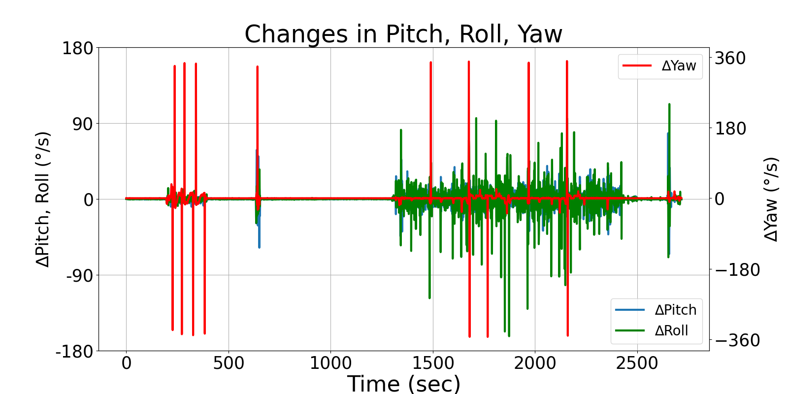
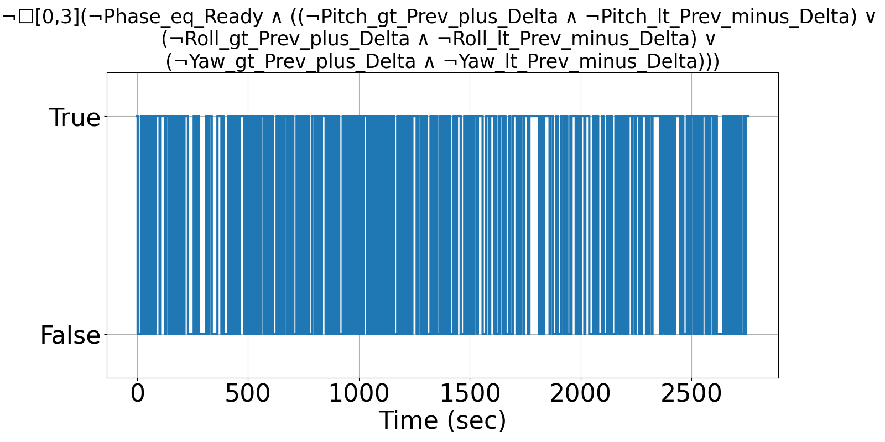
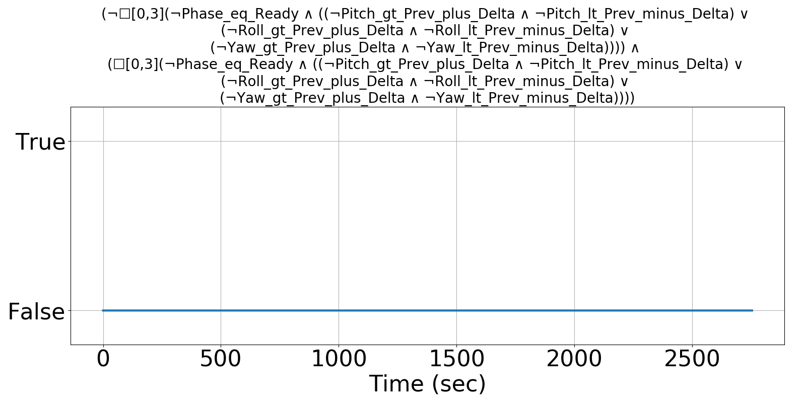

Integrating Runtime Verification into an
Automated UAS Traffic Management System
Matthew Cauwels, Abigail Hammer, Benjamin Hertz, Phillip H. Jones, Kristin Y. Rozier
This webpage contains supplementary specifications for "Integrating Runtime Verification into an
Automated UAS Traffic Management System" by M. Cauwels, A. Hammer, B. Hertz, P. H. Jones, and K. Y. Rozier
RC_UAS_4
Specificaiton Description
There should be noise in the Pitch, Roll, and Yaw measurement while the Phase is not "Ready" such that the change is at minimum EUL_DELTA_MIN, but if it is not, allow 3 timesteps to recover
Signals Required
Pitch, Roll, Yaw, Phase
Boolean Conversion of Signals to Atomic Inputs
Pitch_gt_Prev_plus_Delta: Pitch > PREV_PITCH + EUL_DELTA_MIN
Pitch_lt_Prev_minus_Delta: Pitch < PREV_PITCH - EUL_DELTA_MIN
Roll_gt_Prev_plut_Delta: Roll > PREV_ROLL + EUL_DELTA_MIN
Roll_lt_Prev_minus_Delta: Roll < PREV_ROLL - EUL_DELTA_MIN
Yaw_gt_Prev_plus_Delta: Yaw > PREV_YAW + EUL_DELTA_MIN
Yaw_lt_Prev_minus_Delta: Yaw < PREV_YAW - EUL_DELTA_MIN
Phase_eq_Ready: Phase == "Ready"MLTL Specificaiton
Original: ¬G[0,3] {Phase_eq_Ready → [ (¬Pitch_gt_Prev_plus_Delta ∧ ¬Pitch_lt_Prev_minus_Delta) ∨ (¬Roll_gt_Prev_plut_Delta ∧ ¬Roll_lt_Prev_minus_Delta) ∨ (¬Yaw_gt_Prev_plus_Delta ∧ ¬Yaw_lt_Prev_minus_Delta) ] }
Updated: (¬G[0,3] {Phase_eq_Ready → [ (¬Pitch_gt_Prev_plus_Delta ∧ ¬Pitch_lt_Prev_minus_Delta) ∨ (¬Roll_gt_Prev_plut_Delta ∧ ¬Roll_lt_Prev_minus_Delta) ∨ (¬Yaw_gt_Prev_plus_Delta ∧ ¬Yaw_lt_Prev_minus_Delta) ] } ) ∧ (G[0,3] {Phase_eq_Ready → [ (¬Pitch_gt_Prev_plus_Delta ∧ ¬Pitch_lt_Prev_minus_Delta) ∨ (¬Roll_gt_Prev_plut_Delta ∧ ¬Roll_lt_Prev_minus_Delta) ∨ (¬Yaw_gt_Prev_plus_Delta ∧ ¬Yaw_lt_Prev_minus_Delta) ] } )
Fault Explanation
Pitch, Roll, and/or Yaw are not producing typical noise: may indicate problem with sensor technology
Additional Notes
There should be noise in these measurements; if there is not that could be a problem (sensor is hung up, cyber-attack, etc). EUL_DELTA_MIN can be made a small non-zero number to be conservative
Figures


